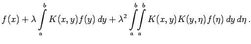

Inhalt Index DeskTop Bronstein

 Lineare Integralgleichungen Fredholmsche Integralgleichungen 2. Art Methode der sukzessiven Approximation, Neumannsche-Reihe
Lineare Integralgleichungen Fredholmsche Integralgleichungen 2. Art Methode der sukzessiven Approximation, Neumannsche-Reihe


Ähnlich dem PICARDschen Iterationsverfahren zur Lösung gewöhnlicher Differentialgleichungen soll eine Methode zur iterativen Bestimmung der Lösung einer FREDHOLMschen Integralgleichung 2. Art angegeben werden. Ausgehend von der Gleichung
wird sukzessiv eine Folge von Funktionen ermittelt. Als erste Iterierte setzt man . Alle folgenden erhält man mittels der Vorschrift:
| (11.11a) |
Führt man die Schritte im einzelnen aus, so ist zunächst
Nach der angegebenen Iterationsvorschrift ist dieser Ausdruck anstelle von  in die rechte Seite von (11.10) einzusetzen. Zur Vermeidung von Verwechslungen soll in (11.11b) die Integrationsvariable y in
in die rechte Seite von (11.10) einzusetzen. Zur Vermeidung von Verwechslungen soll in (11.11b) die Integrationsvariable y in  umbenannt werden. Man erhält:
umbenannt werden. Man erhält:
| = | (11.11c) | ||
| = |  | (11.11d) |
Mit der Bezeichnung
erhält man auf analoge Weise die Darstellung für die n-te Iterierte :
Der Ausdruck Kn(x,y) wird als n-ter iterierter Kern von K(x,y) bezeichnet.